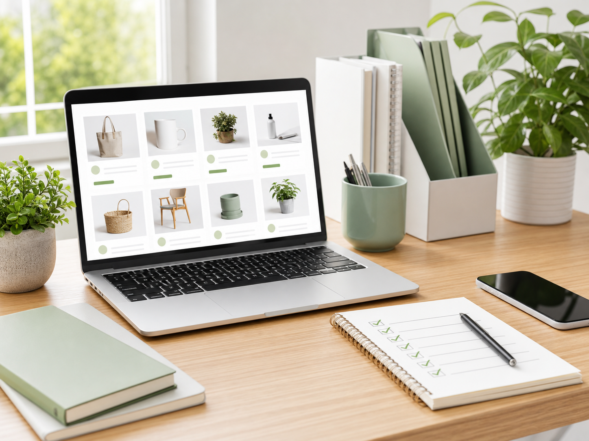

하루 30분과 주말형은 전략이 다릅니다
자투리 시간에는 앱테크, 데이터 라벨링, 상품 등록처럼 작은 단위로 끊을 수 있는 일이 맞습니다. 주말에 몰아서 할 수 있다면 전자책, 강의, 템플릿 제작처럼 누적형 자산을 만드는 쪽이 유리합니다.
직장인과 육아맘을 위한 현실적인 부업 선택
무작정 돈 되는 부업을 고르기보다 시간, 초기 비용, 업무 방식, 수익화 속도를 함께 비교해야 오래 지속할 수 있습니다. 아래 추천기는 7가지 질문을 바탕으로 시작 가능한 부업을 좁혀줍니다.
답변은 브라우저 안에서만 계산되며 서버로 전송되지 않습니다.
고품질 부업 정보는 “무조건 고수익”을 말하지 않습니다. 본업과 생활 리듬을 해치지 않는지, 초기에 배워야 할 것이 무엇인지, 수익까지 걸리는 시간이 어느 정도인지 먼저 따져야 합니다.
자투리 시간에는 앱테크, 데이터 라벨링, 상품 등록처럼 작은 단위로 끊을 수 있는 일이 맞습니다. 주말에 몰아서 할 수 있다면 전자책, 강의, 템플릿 제작처럼 누적형 자산을 만드는 쪽이 유리합니다.
장비나 강의를 먼저 구매하기 전에 무료 도구로 최소 결과물을 만들어 보세요. 첫 고객, 첫 조회수, 첫 판매 가능성을 확인한 뒤 필요한 비용을 쓰는 편이 실패 비용을 줄입니다.
부업은 대부분 초반 수익이 작습니다. 그래서 단기 수익만 보고 고르면 중간에 멈추기 쉽습니다. 관심 분야와 기존 경험을 연결하면 학습 비용이 낮아지고 콘텐츠의 깊이도 좋아집니다.
직무 경험, 생활 노하우, 육아 기록처럼 꾸준히 쓸 수 있는 주제가 있을 때 적합합니다. 광고 수익은 시간이 걸리므로 처음 3개월은 글의 양보다 검색자가 실제로 궁금해하는 질문에 답하는 데 집중하는 것이 좋습니다.
이력서, 엑셀, 업무 자동화, 면접 준비처럼 명확한 문제를 해결해 줄 수 있는 사람에게 맞습니다. 완벽한 책보다 특정 문제 하나를 해결하는 짧은 자료가 첫 판매에 더 유리할 수 있습니다.
캔바, 굿노트, 노션, 발표 자료처럼 반복해서 쓰이는 양식을 만드는 부업입니다. 디자인 감각뿐 아니라 구매자가 시간을 절약할 수 있는 구조를 제공하는 것이 중요합니다.

빠르게 시작할 수 있지만 단가가 낮을 수 있어 목표 수익을 현실적으로 잡아야 합니다. 초반에는 작업 방식에 익숙해지고, 이후에는 상세페이지 보조나 운영 대행처럼 더 높은 단가의 업무로 넓히는 전략이 필요합니다.
이 사이트의 추천은 일반적인 정보 제공을 위한 것이며 특정 수익을 보장하지 않습니다. 실제 결과는 개인의 경험, 시간, 시장 수요, 플랫폼 정책에 따라 달라질 수 있습니다.
아닙니다. 글쓰기, 상품 등록, 데이터 라벨링, 간단한 템플릿 제작은 무료 도구로도 시작할 수 있습니다. 다만 시간을 줄이거나 품질을 높이기 위해 나중에 도구 비용이 생길 수 있습니다.
근무 시간과 이해상충 문제가 없는지 먼저 확인해야 합니다. 회사의 겸업 규정이 있다면 반드시 확인하고, 본업 자료나 고객 정보를 부업에 사용해서는 안 됩니다.
주제와 글 품질, 검색 수요에 따라 차이가 큽니다. 보통은 몇 주 안에 큰 수익을 기대하기보다 3~6개월 이상 꾸준히 콘텐츠를 쌓는 관점이 현실적입니다.
선택한 7개 답변과 각 부업의 적합 조건을 비교해 점수를 계산합니다. 점수가 높은 순서로 최대 3개를 보여주며, 이는 선택을 돕기 위한 참고 기준입니다.